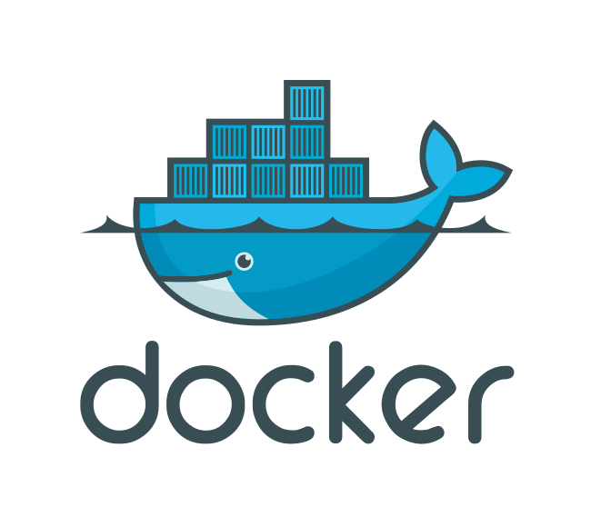
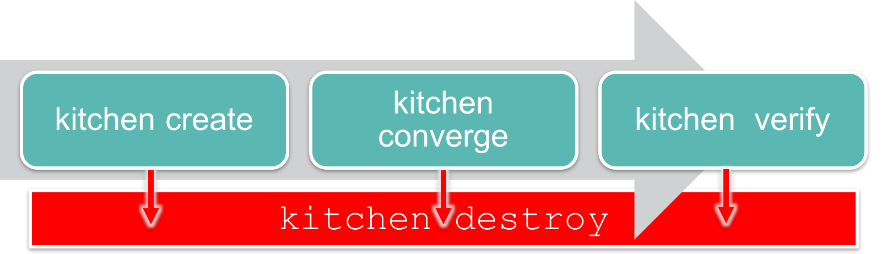
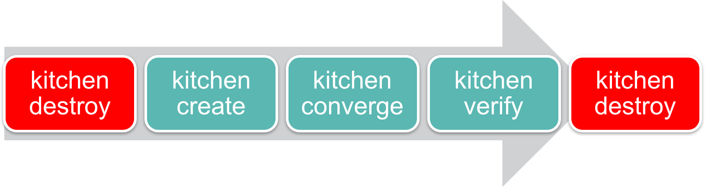

name: inverse layout: true class: center, middle, inverse --- # Testing Cookbooks ## Validating Our Recipes in Virtual Environments --- layout: false # Objectives .right-column[ After completing this module, you should be able to: * Use Test Kitchen to verify your recipes converge on a virtual instance * Read the ServerSpec documentation * Write and execute tests ] ??? In this module you will learn how to use the Test Kitchen tool to execute your configured code, write and execute tests, and use Serverspec to test your servers' actual state. --- # Can We Test Cookbooks? .right-column[ As we start to define our infrastructure as code we also need to start thinking about testing it. ] -- .right-column[ >* Will the recipes that we created work on another system similar to this one? Will they work in production? ] -- .right-column[ >* "Works on my machine". ] -- .right-column[ >* So how could we solve a problem like this? ] ??? Will the recipes that we created work on another system similar to this one? Will they work in production? When we develop our automation we need to start thinking about verifying it. Because it is all too common a story of automation failing when it reaches production because it was never validated against anything other than "my machine". So how could we solve a problem like this? --- # Mandating Testing .right-column[ What steps would it take to test one of the cookbooks that we have created? ] ??? Write down or type out as many of the steps you can think of required to test one of the cookbooks. When you are ready turn to another person and compare your lists. Create a complete list with all the steps that you have identified. Then as a group we will discuss all the steps necessary to test a cookbook. Instructor Note: This exercise is useful in helping the learners visualize the each step of testing process and how Test Kitchen maps to each of those steps. --- class: center, middle <center><img style="width:100%" src="images/Steps to verify cookbooks.png"></center> ??? Here are the steps necessary to verify one of the cookbooks that you created. Create a virtual machine or setup an instance that resembles your current production infrastructure Install the necessary Chef tools Copy the cookbooks to this new instance Apply the cookbooks to the instance Verify that the instance is the desired state by executing various commands Clean up that instance by destroying it or rolling it back to a previous snapshot Instructor Note: The class participant should be able to create a list of similar steps. The names and the detail may vary based on their experience or expertise. Instead of presenting this slide you may find it more engaging to invite the learners to share the list of steps that they created and create a list that represents the voice of the group. If you do, you may find it useful to hide this slide. --- # Testing Cookbooks .right-column[ * We can start by first mandating that all cookbooks are tested. ] -- .right-column[ ###Considerations-- ] -- .right-column[ >* How often should you test your cookbook? ] -- .right-column[ >* How often do you think changes will occur? ] -- .right-column[ >* What happens when the rate of cookbook changes exceed the time interval it takes to verify the cookbook? ] ??? So we can start by mandating that all cookbooks are tested. But we need to consider how often we need to test a cookbook and how often changes to our cookbooks will occur. And what would happen if the rate of rate of cookbook changes exceed the time interval it takes to verify the cookbook? --- # Code Testing .right-column[ * An automated way to ensure code accomplishes the intended goal and help the team understand its intent. ] ??? Testing tools provide automated ways to ensure that the code we write accomplishes its intended goal. It also helps us understand the intent of our code by providing executable documentation. We add new cookbook features and write tests to preserve this functionality. This provides us, or anyone else on the team, the ability to make new changes with a less likely chance of breaking something. Whether returning to the cookbook code tomorrow or in six months. --- # Test Configuration .right-column[ _"What are we running in production? Maybe I could test the cookbook against a virtual machine."_ ] -- .right-column[ ## Objective: * Configure the __workstation__ cookbook to test against the centos-6.7 platform * Test the __workstation__ cookbook on a virtual machine ] ??? Well if Chef is to replace our existing tools, it is going to need to provide a way to make testing the policies more delightful. --- class: center, middle <center><img style="width:100%" src="images/Test Kitchen Commands and Configuration.png"></center> ??? Test Kitchen allows us to create an instance solely for testing. On that created instance it will install Chef, converge a run list of recipes, verify that the instance is in the desired state, and then destroy the instance. On the left are the kitchen commands that map to the stages of the testing lifecycle. On the right are the kitchen configuration fields that map to the stages of the testing lifecycle. These commands the configuration will be explained in more detail. Instructor Note: If you created a custom list of steps with your learners use that custom list and overlay the following information over top of it. --- # What Can __kitchen__ Do? ```bash $ kitchen --help ``` ```terminal Commands: kitchen console # Kitchen Console! kitchen converge [INSTANCE|REGEXP|all] # Converge one or more instances kitchen create [INSTANCE|REGEXP|all] # Create one or more instances kitchen destroy [INSTANCE|REGEXP|all] # Destroy one or more instances ... kitchen help [COMMAND] # Describe available commands or one specif... * kitchen init # Adds some configuration to your cookbook... kitchen list [INSTANCE|REGEXP|all] # Lists one or more instances kitchen setup [INSTANCE|REGEXP|all] # Setup one or more instances kitchen test [INSTANCE|REGEXP|all] # Test one or more instances kitchen verify [INSTANCE|REGEXP|all] # Verify one or more instances kitchen version # Print Kitchen's version information ``` ??? Kitchen is a command-line application that enables us to manage the testing lifecycle. Similar to other tools within the ChefDK, we can ask for help to see the available commands. The `init` command, by its name, seems like a good place to get started. --- # What Can __kitchen init__ Do? ```bash $ kitchen help init ``` ```terminal Usage: kitchen init -D, [--driver=one two three] # One or more Kitchen Driver gems ... # Default: kitchen-vagrant -P, [--provisioner=PROVISIONER] # The default Kitchen Provisioner to use # Default: chef_solo [--create-gemfile], [--no-create-gemfile] # Whether or not to create a Gemfi ... Description: * Init will add Test Kitchen support to an existing project for convergence * integration testing. A default .kitchen.yml file (which is intended to be * customized) is created in the project's root directory and one or more gems * will be added to the project's Gemfile. ``` ??? `kitchen help init` tells us that it will add Test Kitchen support to an existing project. It creates a .kitchen.yml file within the project's root directory. There are a number of flags and other options but let's see if the cookbooks we created even needs us to initialize test kitchen. --- # Do We Have a `.kitchen.yml`? ```bash $ tree cookbooks/workstation -a -I .git ``` ```terminal workstation ├── Berksfile ├── chefignore ├── .gitignore *├── .kitchen.yml ├── metadata.rb ├── README.md ├── recipes │ ├── default.rb │ └── setup.rb ├── spec │ ├── spec_helper.rb │ └── unit ... ``` ??? Using `tree` to look at the workstation cookbook, showing all hidden files and ignoring all git files, it looks like our cookbook already has a .kitchen.yml. It was actually created alongside the other files when we ran the `chef generate cookbook` command when we originally created this cookbook. Let's take a look at the contents of this file. --- # What is Inside `.kitchen.yml`? ```bash $ cat cookbooks/workstation/.kitchen.yml ``` ```yaml --- driver: name: vagrant provisioner: name: chef_zero platforms: - name: ubuntu-14.04 - name: centos-7.1 suites: - name: default ``` ??? The .kitchen.yml file defines a number of configuration entries that the kitchen command uses during execution. --- ## `.kitchen.yml` .right-column[ * When __chef__ generates a cookbook, a default `.kitchen.yml` is created. * It contains kitchen configuration for the driver, provisioner, platform, and suites. .footnote[[http://kitchen.ci/docs/getting-started/creating-cookbook]()] ] ??? We don't need to run `kitchen init` because we already have a default kitchen file. We may still need to update it to accomplish our objectives so lets learn more about the various fields in the configuration file. --- # Demo: The __kitchen__ Driver `~/cookbooks/workstation/.kitchen.yml` ```yaml --- driver: * name: vagrant provisioner: name: chef_zero platforms: - name: ubuntu-14.04 - name: centos-7.1 ... ``` The driver is responsible for creating a machine that we'll use to test our cookbook. Example Drivers: * docker * vagrant ??? The first key is driver, which has a single key-value pair that specifies the name of the driver Kitchen will use when executed. The driver is responsible for creating the instance that we will use to test our cookbook. There are lots of different drivers available--two very popular ones are the docker and vagrant driver. Instructor Note: Testing on this remote workstation requires that we use Docker because Vagrant does not work within a virtual environment. Vagrant is the standard choice when working on your local workstation. --- # Demo: The __kitchen__ Provisioner `~/cookbooks/workstation/.kitchen.yml` ```yaml --- driver: name: vagrant provisioner: * name: chef_zero platforms: - name: ubuntu-14.04 - name: centos-7.1 ... ``` This tells Test Kitchen how to run Chef to apply the code in our cookbook to the machine under test. The default and simplest approach is to use __chef_zero__. ??? The second key is provisioner, which also has a single key-value pair which is the name of the provisioner Kitchen will use when executed. This provisioner is responsible for how it applies code to the instance that the driver created. Here the default value is chef_zero. --- # Demo: The __kitchen__ Platforms `~/cookbooks/workstation/.kitchen.yml` ```yaml --- driver: name: vagrant provisioner: name: chef_zero platforms: * - name: ubuntu-14.04 * - name: centos-7.1 ... ``` This is a list of operation systems on which we want to run our code. ??? The third key is platforms, which contains a list of all the platforms that Test Kitchen will test against when executed. This should be a list of all the platforms that you want your cookbook to support. --- # Demo: The __kitchen__ Suites `~/cookbooks/workstation/.kitchen.yml` ```yaml ... suites: - name: default run_list: - recipe[workstation::default] attributes: ``` This section defines what we want to test. It includes the Chef `run-list` of recipes that we want to test. We define a single suite named `default`. ??? The fourth key is suites, which contains a list of all the test suites that Kitchen will test against when executed. Each suite usually defines a unique combination of run lists that exercise all the recipes within a cookbook. In this example, this suite is named 'default'. --- # Demo: The __kitchen__ Suites `~/cookbooks/workstation/.kitchen.yml` ```yaml ... suites: - name: default run_list: * - recipe[workstation::default] attributes: ``` The suite named __default__ defines a run_list. Run the __workstation__ cookbook's __default__ recipe file. ??? This default suite will execute the run list containing: The workstation cookbook's default recipe. --- # Kitchen Test Matrix .right-column[ * Kitchen defines a list of instances, or test matrix, based on the platforms multiplied by the suites. > PLATFORMS x SUITES * Running kitchen list will show that matrix. ] ??? It is important to recognize that within the .kitchen.yml file we defined two fields that create a test matrix; The number of platforms we want to support multiplied by the number of test suites that we defined. --- # Example: Kitchen Test Matrix ```bash $ kitchen list ``` ```terminal Instance Driver Provisioner Verifier Transport Last Action *default-ubuntu-1204 Vagrant ChefZero Busser Ssh <Not Created> default-centos-65 Vagrant ChefZero Busser Ssh <Not Created> ``` .left-column-50[ ```yaml suites: * - name: default run_list: - recipe[workstation::default] attributes: ``` ] .right-column-50[ ```yaml platforms: * - name: ubuntu-12.04 - name: centos-6.5 ``` ] ??? We can visualize this test matrix by running the command `kitchen list`. In the output you can see that an instance is created in the list for every suite and every platform. In our current file we have one suite, named 'default', and two platforms. First the ubuntu 12.04 platform. Instructor Note: This command will fail if ran on the workstations because the vagrant driver is still defined on the remote workstation. This is an example. --- # Example: Kitchen Test Matrix ```bash $ kitchen list ``` ```terminal Instance Driver Provisioner Verifier Transport Last Action default-ubuntu-1204 Vagrant ChefZero Busser Ssh <Not Created> *default-centos-65 Vagrant ChefZero Busser Ssh <Not Created> ``` .left-column-50[ ```yaml suites: * - name: default run_list: - recipe[workstation::default] attributes: ``` ] .right-column-50[ ```yaml platforms: - name: ubuntu-12.04 * - name: centos-6.5 ``` ] ??? We can visualize this test matrix by running the command `kitchen list`. In the output you can see that an instance is created in the list for every suite and every platform. In our current file we have one suite, named 'default', and two platforms. First the ubuntu 12.04 platform. Instructor Note: This command will fail if ran on the workstations because the vagrant driver is still defined on the remote workstation. This is an example. --- ## Group Exercise: Test Configuration .right-column[ _"What are we running in production? Maybe I could test the cookbook against a virtual machine."_ ] -- .right-column[ ## Objective: * Configure the __workstation__ cookbook's `.kitchen.yml` to use the Docker driver and centos 6.7 platform. * Use __kitchen converge__ to apply the recipe on a virtual machine. ] ??? Remembering our objective, we want to update our .kitchen.yml file to use the Docker driver and we want to test against a single platform named centos 6.7. --- ## Group Exercise: Move into the Cookbook's Directory ```bash $ cd ~/cookbooks/workstation ``` ??? Let's change into our workstation cookbook's directory. --- ## Group Exercise: Edit the Kitchen Configuration File `~/cookbooks/workstation/.kitchen.yml` ```yaml --- driver: * name: docker provisioner: name: chef_zero platforms: - name: centos-6.7 suites: # ... REMAINDER OF FILE ... ``` <center></center> .footnote[[https://github.com/portertech/kitchen-docker]()] ??? Docker is a driver. So replace the existing vagrant driver, in your .kitchen.yml, with the Docker driver. Instructor Note: The reason we are using the Docker driver is that it is possible to run this on cloud platforms and perform virtualization within the already existing virtualization. --- ## Group Exercise: Edit the Kitchen Configuration File `~/cookbooks/workstation/.kitchen.yml` ```yaml --- driver: name: docker provisioner: name: chef_zero platforms: * - name: centos-6.7 suites: # ... REMAINDER OF FILE ... ``` <center></center> .footnote[[https://www.centos.org]()] ??? We also want to update our platforms to list only centos-6.7. --- ## Group Exercise: Look at the Test Matrix ```bash $ kitchen list ``` ```terminal <span style="color:green;">Instance Driver Provisioner Verifier Transport Last Action</span> default-centos-67 Docker ChefZero Busser Ssh <span style="color:red;"><code><</code>Not Created<code>></code></span> ``` ??? Run the `kitchen list` command to display our test matrix. You should see a single instance. --- # Converging a Cookbook .right-column[ _"Before I add features it really would be nice to test these cookbooks against the environments that resemble production."_ ] -- .right-column[ ## Objective: * Configure the __workstation__ cookbook's `.kitchen.yml` to use the Docker driver and centos-6.7 platform * Use __kitchen converge__ to apply the recipe on a virtual machine ] ??? Now that we've defined the test matrix that we want to support, it is time to understand how to use Test Kitchen to create an instance, converge a run list of recipes on that instance, verify that the instance is in the desired state, and then destroy the instance. --- # Kitchen Create <center><img style="width:70%" src="images/kitchen-create.png"></center> ```bash $ kitchen create [INSTANCE|REGEXP|all] ``` Create one or more instances. ??? The first kitchen command is `kitchen create`. To create an instance means to turn on virtual or cloud instances for the platforms specified in the kitchen configuration. Running `kitchen create default-centos-67` would create the the one instance that uses the test suite on the platform we want. Typing in that name would be tiring if you had a lot of instances. A shortcut can be used to target the same system `kitchen create default` or `kitchen create centos` or even `kitchen create 67`. This is an example of using the Regular Expression (REGEXP) to specify an instance. When you want to target all of the instances you can run `kitchen create`. This will create all instances. Seeing as how there is only one instance this will work well. In our case, this command would use the Docker driver to create a docker image based on centos-6.7. Instructor Note: The command does allow you to create specific instances by name or all instances that match a provided criteria. --- # Group Exercise: Kitchen Converge <center></center> ```bash $ kitchen converge [INSTANCE|REGEXP|all] ``` Create the instance (if necessary) and then apply the run list to one or more instances. ??? Creating an image gives us a instance to test our cookbooks but it still would leave us with the work of installing chef and applying the cookbook defined in our .kitchen.yml run list. So let's introduce you to the second kitchen command: `kitchen converge`. Converging an instance will create the instance if it has not already been created. Then it will install chef and apply that cookbook to that instance. In our case, this command would take our image and install chef and apply the workstation cookbook's default recipe. Instructor Note: It also, like the `kitchen create` commands, defaults to all instances when executed without any parameters. And is capable of accepting parameters to converge a specific instance or all instances that match the provided criteria. --- ## Group Exercise: Converge the Cookbook ```bash $ cd ~/cookbooks/workstation $ kitchen converge ``` ```terminal -----> Starting Kitchen (v1.4.0) -----> Creating <default-centos-67>... Sending build context to Docker daemon 2.56 kB (skipping) -----> Finished creating <default-centos-67> (1m18.32s). -----> Converging <default-centos-67>... $$$$$$ Running legacy converge for 'Docker' Driver (skipping) Synchronizing Cookbooks: - workstation Compiling Cookbooks... Converging 0 resources Running handlers: ``` ??? Be sure you are at ~/cookbooks/workstation and then run `kitchen converge` to verify that the workstation cookbook is able to converge the default recipe against the platform centos 6.7. The workstation cookbook should successfully apply the default recipe. If an error occurs, lets stop and troubleshoot the issues. Instructor Note: It can take about four minutes for this task to complete on the system. During this time you could demo Test Kitchen on your local workstation using Vagrant and Virtual Box. --- # Lab: Converge the Recipe for __apache__ .right-column[ * We want to validate that our run-list installs correctly. * Within the __apache__ cookbook, use __kitchen converge__ for the default suite on the centos 6.7 platform. ] ??? Do the same thing again for the apache cookbook. Update the .kitchen.yml file so that it converges the apache cookbook's default recipe on the centos-6.7 platform with the docker driver. Instructor Note: Allow 8 minutes to complete this exercise. --- # Lab: Configuring Test Kitchen for __apache__ `~/cookbooks/apache/.kitchen.yml` ```yaml --- driver: name: docker provisioner: name: chef_zero platforms: - name: centos-6.7 suites: - name: default run_list: - recipe[apache::default] attributes: ``` ??? Like you did before, update the .kitchen.yml file to use the docker driver and the centos-6.7 platform. --- # Lab: Converge the __apache__ Cookbook ```bash $ cd ~/cookbooks/apache $ kitchen converge ``` ```terminal -----> Starting Kitchen (v1.4.0) -----> Creating <default-centos-67>... Sending build context to Docker daemon 2.56 kB Sending build context to Docker daemon (skipping) Installing Chef installing with rpm... warning: /tmp/install.sh.23/chef-12.4.1-1.el6.x86_64.rpm: Header V4 DSA/SHA1 Signature, key ID 83ef826a: NOKEY (skipping) Synchronizing Cookbooks: - apache Compiling Cookbooks... ``` ??? Execute `kitchen converge` to validate that our apache cookbook's default recipe is able to converge on the centos-6.7 instance. --- # Test Kitchen .right-column[ * What is being tested when __kitchen__ converges a recipe without error? ] -- .right-column[ * What is NOT being tested when __kitchen__ converges the recipe without error? ] -- .right-column[ * What is left to validate to ensure that the cookbook successfully applied the policy defined in the recipe? ] ??? Kitchen converge will create the instance if it is not already created. It will install Chef. Then it applies the recipe to the system examining each of the resources and asking them to take action to place the system into the desired state. What is being tested when kitchen converges a recipe without error? What is NOT being tested when kitchen converges the recipe without error? Instructor Note: Converging the recipe is able to validate that our recipe is defined without error. However, converging a particular recipe does not validate that the intended goal of the recipe has been successfully executed. What is left to validate to ensure that the cookbook successfully applied the policy defined in the recipe? Instructor Note: Converging the instance ensured that the recipe was able to install a package, write out a file, and start and enable a service. But what it was unable to check to see if the system was configured correctly -- is our instance serving up our custom home page. --- # The First Test .right-column[ _"Converging seems to validate that the recipe runs successfully. But does it assert what actually is installed?"_ ] -- .right-column[ ## Objective: * In a few minutes we'll write and execute a test that asserts that the __tree__ package is installed when the __workstation__ cookbook's __default__ recipe is applied. ] ??? There is no automation that automatically understands the intention defined in the recipes we create. To do that we will define our own automated test. Lets explore testing by adding a simple test to validate that the tree package is installed after converging the workstation cookbook's default recipe. We'll do this together in a few minutes. --- # Kitchen Verify <center></center> ```bash $ kitchen verify [INSTANCE|REGEXP|all] ``` Create, converge, and verify one or more instances. ??? The third kitchen command is `kitchen verify`. To verify an instance means to: Create a virtual or cloud instances, if needed Converge the instance, if needed And then execute a collection of defined tests against the instance In our case, our instance has already been created and converged so when we run `kitchen verify` it will execute the tests that we will later define. Instructor Note: It works as the other commands do with regard to parameters and targeting instances. --- # Kitchen Destroy <center></center> ```bash $ kitchen destroy [INSTANCE|REGEXP|all] ``` Destroys one or more instances. ??? The fourth kitchen command is `kitchen destroy`. Destroy is available at all stages and essentially cleans up the instance. Instructor Note: It works as all the other commands do with regard to parameters and targeting instances. --- # Kitchen Test <center></center> ```bash $ kitchen test [INSTANCE|REGEXP|all] ``` Destroys (for clean-up), creates, converges, verifies and then destroys one or more instances. ??? There a single command that encapsulates the entire workflow - that is `kitchen test`. Kitchen test ensures that if the instance was in any state - created, converged, or verified - that it is immediately destroyed. This ensures a clean instance to perform all of the steps: create; converge; and verify. `kitchen test` completes the entire execution by destroying the instance at the end. Traditionally this all encompassing workflow is useful to ensure that we have a clean state when we start and we do not leave a mess behind us. --- # Serverspec .right-column[ * __Serverspec__ tests your servers' actual state by executing command locally, via SSH, via WinRM, via Docker API and so on. * So you don't need to install any agent software on your servers and can use any configuration management tools, Puppet, Chef, CFEngine, Itamae and so on. .footnote[[http://serverspec.org]()] ] ??? So `kitchen verify` and `kitchen test` are the two kitchen commands that we can use to execute a body of tests against our instances. Now it is time to define those tests with ServerSpec. ServerSpec is one of many possible test frameworks that Test Kitchen supports. It is a popular choice for those doing Chef cookbook development because ServerSpec is built on a Ruby testing framework named RSpec. RSpec is similar to Chef - as it is a Domain Specific Language, or DSL, layered on top of Ruby. Where Chef gives us a DSL to describe the policy of our system, RSpec allows us to describe the expectations of tests that we define. ServerSpec adds a number of helpers to RSpec to make it easy to test the state of a system. --- ## Example Is the __tree__ package installed? ```ruby describe package('tree') do it { should be_installed } end ``` I expect the package __tree__ should be installed. .footnote[[http://serverspec.org/resource_types.html#package]()] ??? Here is an example of an isolated ServerSpec expectation that states: We expect the package named 'tree' to be installed. --- ## Group Exercise: Requiring a Test Helper `~/cookbooks/workstation/test/integration/default/serverspec/default_spec.rb` ```ruby *require 'spec_helper' describe 'workstation::default' do describe package('tree') do it { should be_installed } end end ``` Loads a helper file with that name in the same directory. .footnote[[http://kitchen.ci/docs/getting-started/writing-test]()] ??? For our test to work with Test Kitchen there are a number of conventions that we need to adhere to have our test code load correctly. First, we need to create a test file, often referred to as a spec file at the following path. The structure of the path is a convention defined by Test Kitchen and will automatically be loaded when we run `kitchen verify`. Fortunately for us the test file has already been created when we used 'chef' to generate the workstation cookbook. Within the spec file we need to first require a helper file. The helper is were we keep common helper methods and library requires in one location. This is likely already present within the generated test file. --- ## Group Exercise: Describing the Test Context `~/cookbooks/workstation/test/integration/default/serverspec/default_spec.rb` ```ruby require 'spec_helper' *describe 'workstation::default' do describe package('tree') do it { should be_installed } end *end ``` Describes a body of tests for the __workstation__ cookbook's __default__ recipe. .footnote[[https://relishapp.com/rspec/rspec-core/v/3-3/docs]()] ??? Second, we define a describe method. RSpec, which ServerSpec is built on uses an english-like syntax to help us describe the various scenarios and examples that we are testing. The 'describe' method takes two parameters - the first is the name of fully-qualifed recipe to execute (cookbook_name::recipe_name). The second parameter is the block between the do and end. Within that block we can define more describe blocks that allow us to further refine the scenario we are testing. --- ## Group Exercise: Our Assertion in a spec File `~/cookbooks/workstation/test/integration/default/serverspec/default_spec.rb` ```ruby require 'spec_helper' describe 'workstation::default' do * describe package('tree') do * it { should be_installed } * end end ``` When we converge the workstation cookbook's default recipe we expect the __tree__ package to be installed. .footnote[[http://serverspec.org/resource_types.html#package]()] ??? Here is that example expectation that we showed you earlier except now it is displayed here within this context. This states that when we converge the workstation cookbook's default recipe we want to assert that the tree package has been installed. Add this expectation to the specification file at the specified path. Instructor Note: The specification is generated with a default expectation that says to replace it with a meaningful test. The learners should delete it. It does not hurt if it is not deleted. --- # Where do Tests Live? .right-column[ `workstation/test/`<span style="background: #F18B21;opacity:0.4;">integration</span>`/default/serverspec/default_spec.rb` Test Kitchen will look for tests to run under this directory. It allows you to put unit or other tests in test/unit, spec, acceptance, or wherever without mixing them up. This is configurable, if desired. .footnote[[http://kitchen.ci/docs/getting-started/writing-test]()] ] ??? Lets take a moment to describe the reason behind this long directory path. Within our cookbook we define a test directory and within that test directory we define another directory named 'integration'. This is the basic file path that Test Kitchen expects to find the specifications that we have defined. --- # Where do Tests Live? .right-column[ `workstation/test/integration/`<span style="background: #F18B21;opacity:0.4;">default</span>`/serverspec/default_spec.rb` * This corresponds to the name of the test suite that is defined in the `.kitchen.yml` file. * In our case the name of the suite is __default__ so when Test Kitchen performs a __kitchen verify__ for the default suite it will look within the `default` folder for the specifications to run. .footnote[[http://kitchen.ci/docs/getting-started/writing-test]()] ] ??? The next part the path, 'default', corresponds to the name of the test suite that is defined in the .kitchen.yml file. In our case the name of the suite is 'default' so when test kitchen performs a `kitchen verify` for the default suite it will look within the 'default' folder for the specifications to run. --- # Where do Tests Live? .right-column[ `workstation/test/integration/default/`<span style="background: #F18B21;opacity:0.4;">serverspec</span>`/default_spec.rb` * This tells Test Kitchen that we wish to use Serverspec framework for testing. .footnote[[http://kitchen.ci/docs/getting-started/writing-test]()] ] ??? 'serverspec' is the kind of tests that we want to define. Test Kitchen supports a number of testing frameworks. --- # Where do Tests Live? .right-column[ `workstation/test/integration/default/serverspec/`<span style="background: #F18B21;opacity:0.4;">default_spec.rb</span> * All test files (or specs) are named after the recipe they test and end with the suffix `_spec.rb`. * A spec missing that will not be found when executing __kitchen verify__. .footnote[[http://kitchen.ci/docs/getting-started/writing-test]()] ] ??? The final part of the path is the specification file. This is a ruby file. The naming convention for this file is the recipe name with the appended suffix of _spec.rb. All specification files must end with _spec.rb. Instructor Note: Without the '_spec.rb' extension RSpec will simply ignore that file. --- ## Group Exercise: Move into the Cookbook ```bash $ cd ~/cookbooks/workstation ``` ??? Change into the workstation cookbook directory. --- ## Group Exercise: Running the Specification ```bash $ kitchen verify ``` ```terminal -----> Starting Kitchen (v1.4.0) -----> Converging <default-centos-67>... $$$$$$ Running legacy converge for 'Docker' Driver (skipping) -----> Chef Omnibus installation detected (install only if missing) Transferring files to <default-centos-67> Starting Chef Client, version 12.4.1 (skipping) Running handlers: Running handlers complete Chef Client finished, 6/6 resources updated in 64.426896317 seconds Finished converging <default-centos-67> (1m9.02s). -----> Kitchen is finished. (1m9.69s) ``` ??? With the first test created, lets verify that the package named 'tree' is installed when we apply the workstation cookbooks default recipe using the `kitchen verify` command to execute our test --- ## Group Exercise: Commit Your Work ```base $ cd ~/cookbooks/workstation $ git add . $ git status $ git commit -m "Added first test for the default recipe" ``` ??? With the first test completed. It is time to commit the changes to source control. --- # More Tests What are other resources within the recipe that we could test? ??? Now that we've explored the basic structure of writing tests to validate our cookbook. What are other resources within the recipe that we could tests? --- # Testing a File .right-column[ * Serverspec can help us assert different characteristics about files on the file system. Like if it is a file, directory, socket or symlink. * The file's mode owner or group. If the file is readable, writeable, or executable. It is even able to verify the data contained within the file. .footnote[[http://serverspec.org/resource_types.html#file]()] ] --- ## Example: The File Contains Data ```ruby describe file('/etc/passwd') do it { should be_file } end ``` I expect the file named `/etc/passwd` to be a file (as opposed to a directory, socket or symlink). .footnote[[http://serverspec.org/resource_types.html#file]()] ??? Here we are describing an expectation that the file named '/etc/passwd' is a file. --- ## Example: The File Contains Specific Content ```ruby describe file('/etc/httpd/conf/httpd.conf') do its(:content) { should match /ServerName www.example.jp/ } end ``` I expect the file named `/etc/httpd/conf/httpd.conf` to have content that matches `ServerName www.example.jp` .footnote[[http://serverspec.org/resource_types.html#file]()] ??? Here we are describing an expectation that the file named '/etc/httpd/conf/httpd.conf' has contents that match the following regular expression. Asserting that somewhere in the file we will find the following bit of text. Instructor Note: ServerSpec uses 'its' here because it is describing a characteristic of the file object. This is common for 'file' and 'command' to retrieve a value from a particular method on the ServerSpec test object that is being created. --- ## Example: The File is Owned by a Particular User ```ruby describe file('/etc/sudoers') do it { should be_owned_by 'root' } end ``` I expect the file named `/etc/sudoers` to be owned by the `root` user. ??? Here we are describing an expectation that the file named '/etc/sudoers' should be owned by the root user. --- # Lab: More Tests .right-column[ * Add tests that validate that the remaining package resources have been installed ([http://serverspec.org/resource_types.html#package]()) * Add tests that validate the file resource ([http://serverspec.org/resource_types.html#file]()) * Run __kitchen verify__ to validate the test meets the expectations that you defined * Commit your changes ] ??? As a lab exercise, we want you to define additional tests that validate the remaining resources within our default recipe. Add tests for the remaining package resources that are converged by the "workstation" cookbook's default recipe. You may also add tests for the file resource to ensure the file is present, that the contents are correctly defined, that it is owned by a particular user and owned by a particular group. Instructor Note: They already tested the tree package but they have not tested their editor package, the git package, or the file resource (MOTD). The leaner is not required to test all of the packages or a particular set of conditions with the file resource. This section is intentionally open and left to the choice of the learner. When reviewing this material with the learner the answers that follow are not the 'correct' solution; they are one solution. Instructor Note: Allow 15 minutes to complete this exercise. --- # Lab: Our Assertion in a __spec__ File `~/cookbooks/workstation/test/integration/default/serverspec/default_spec.rb` ```ruby require 'spec_helper' describe 'workstation::default' do # ... other tests for packages ... describe package('tree') do it { should be_installed } end * describe package('git') do * it { should be_installed } * end end ``` The package named __git__ is installed. .footnote[[http://serverspec.org/resource_types.html#package]()] ??? Let's review the lab. Here we are verifying that the package git is installed. The structure of the test is very similar to the one we demonstrated earlier. You'll likely have another test that validates the editor you specified is also installed. --- # Lab: Our Assertion in a spec File `~/cookbooks/workstation/test/integration/default/serverspec/default_spec.rb` ```ruby ... describe package('git') do it { should be_installed } end * describe file('/etc/motd') do * it { should be_owned_by 'root' } * end end ``` The file named `/etc/motd` should be owned by __root__. .footnote[[http://serverspec.org/resource_types.html#file]()] ??? For the file resource, we chose only to verify that the file named '/etc/motd' is owned by the root user. You may have verified that it was a file, that it belonged to a group, and that it contained content you felt important to verify. --- ## Group Exercise: Return to the Cookbook Directory ```bash $ cd ~/cookbooks/workstation ``` ??? Change into the workstation cookbook directory. --- # Lab: Running the Specification ```bash $ kitchen verify ``` ```terminal -----> Starting Kitchen (v1.4.0) -----> Converging <default-centos-67>... $$$$$$ Running legacy converge for 'Docker' Driver (skipping) -----> Chef Omnibus installation detected (install only if missing) Transferring files to <default-centos-67> Starting Chef Client, version 12.4.1 (skipping) Running handlers: Running handlers complete Chef Client finished, 6/6 resources updated in 64.426896317 seconds Finished converging <default-centos-67> (1m9.02s). -----> Kitchen is finished. (1m9.69s) ``` ??? With more tests created lets verify all of these tests pass when we converged the workstation cookbooks default recipe. Use the `kitchen verify` command to execute the test --- # Lab: Commit Your Work ```bash $ cd ~/cookbooks/workstation $ git add . $ git status $ git commit -m "Added additional tests for default recipe" ``` ??? If all the tests that you defined are working then it is time to commit our changes to version control. --- # Testing Our Webserver .right-column[ _"I would love to know that the webserver is installed and running correctly."_ ] -- .right-column[ ## Objective: * Discuss and decide what should be tested with the __apache__ cookbook ] ??? Now lets turn our focus towards testing the apache cookbook. --- # Testing .right-column[ * What are some things we could test to validate our web server has deployed correctly? * What manual tests do we use now to validate a working web server? ] ??? What are some things we could test to validate our web server has deployed correctly? The apache cookbook is similar to the workstation cookbook. It has a package and file which are things that we have already tested. The new thing is the service. We could review the ServerSpec documentation to find examples on how to test the service. But does testing the package, file and service validate that apache is hosting our static web page and returning the content to visitors of the instance? What manual tests do we use now to validate a working web server? After applying the recipes in the past we visited the site through a browser or verified the content through running the command 'curl localhost'. Is that something that we could test as well? Does ServerSpec provide the way for us to execute a command and verify the results? --- # Lab: Testing Apache .right-column[ * Create a test file for the __apache__ cookbook's default recipe * Add tests that validate a working web server > [http://serverspec.org/resource_types.html#port]() > [http://serverspec.org/resource_types.html#command]() * Run __kitchen verify__ * Commit your changes ] ??? So for this final exercise, you are going to create a test file for the apache cookbook's default recipe. That test will validate that you have a working web server. This means I want you to add the tests that you feel are necessary to verify that the system is installed and working correctly. When you are done execute your tests with `kitchen verify`. Instructor Note: Allow 15 minutes to complete this exercise. --- # Lab: Switch to the __apache__ cookbook ```bash $ cd ~/cookbooks/apache ``` ??? Return home and then move into the apache cookbook's directory. --- # Lab: What Does the Webserver Say? `~/cookbooks/apache/test/integration/default/serverspec/default_spec.rb` ```ruby require 'spec_helper' describe 'apache::default' do describe port(80) do it { should be_listening } end describe command('curl http://localhost') do its(:stdout) { should match /Hello, world!/ } end end ``` * Port 80 should be listening. * The standard out from the command __curl http://localhost__ should match 'Hello, world!' ??? Here we chose to validate that port 80 should be listening for incoming connections. And we also validated that the standard out from the command 'curl http://localhost' should match 'Hello, world!'. --- # Lab: Commit Your Work ```bash $ cd ~/cookbooks/apache $ git add . $ git status $ git commit -m "Added tests for the default recipe" ``` ??? Again, lets commit the work. --- # Discussion .right-column[ * Why do you have to run __kitchen__ within the directory of the cookbook? ] -- .right-column[ * Where would you define additional platforms? ] -- .right-column[ * Why would you define a new test suite? ] -- .right-column[ * What are the limitations of using Test Kitchen to validate recipes? ] ??? Answer these questions. With your answers, turn to another person and alternate asking each other asking these questions and sharing your answers. --- # Q&A What questions can we help you answer? * Test Kitchen * __kitchen__ commands * __kitchen__ configuration * Serverspec ??? What questions can we help you answer? Generally or specifically about test kitchen, kitchen commands, kitchen configuration, ServerSpec. --- <center><img style="width:70%" src="images/logo.svg"></center>